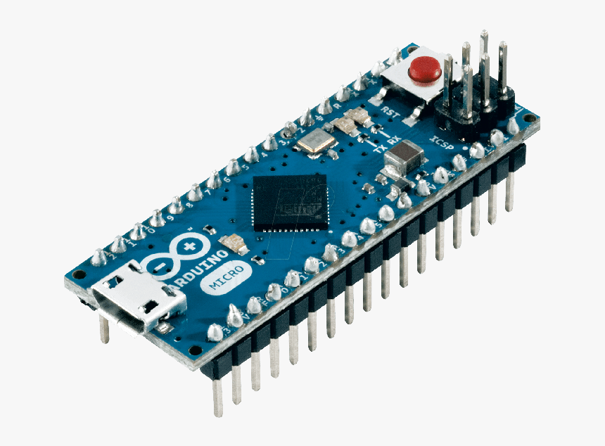
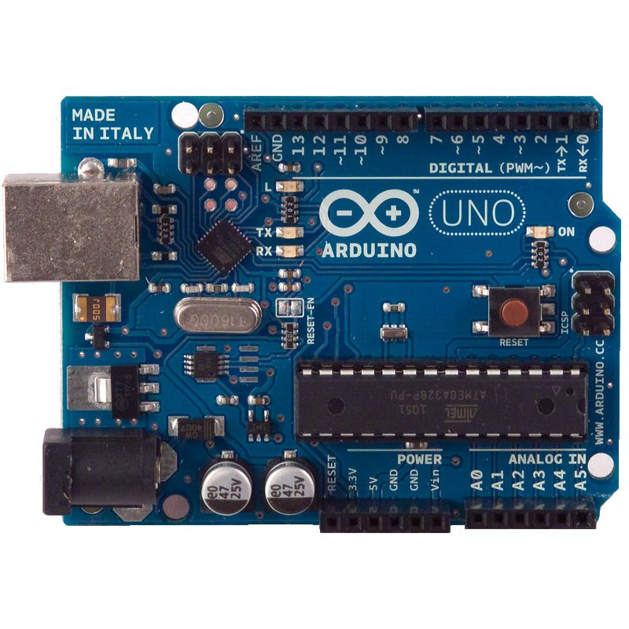
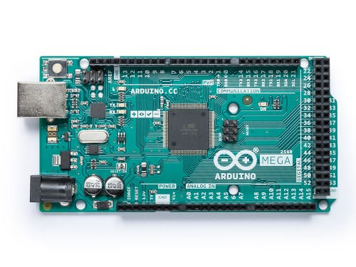

Придбати
Уроки
Де купити мікроконтролер?
Придбати бажаний мікроконтролер можна, перейшовши на сайт
arduino.ua
Рекомендовані:



Зверніть увагу на стартовий набір Arduino, який допоможе Вам почати створювати власні невеличкі механізми: